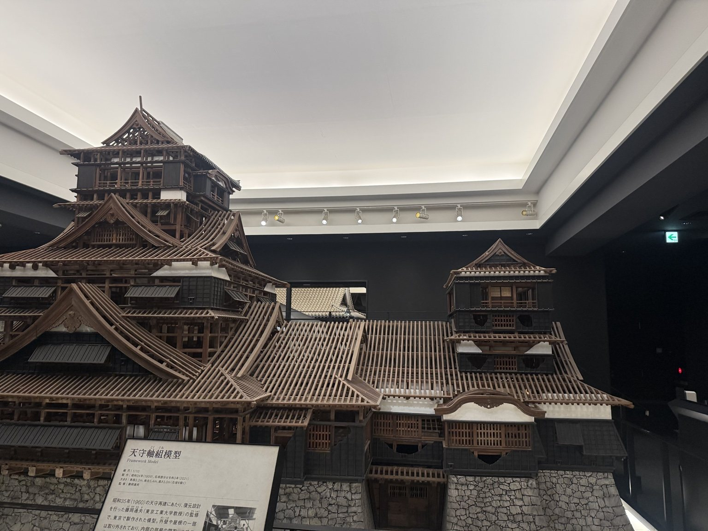
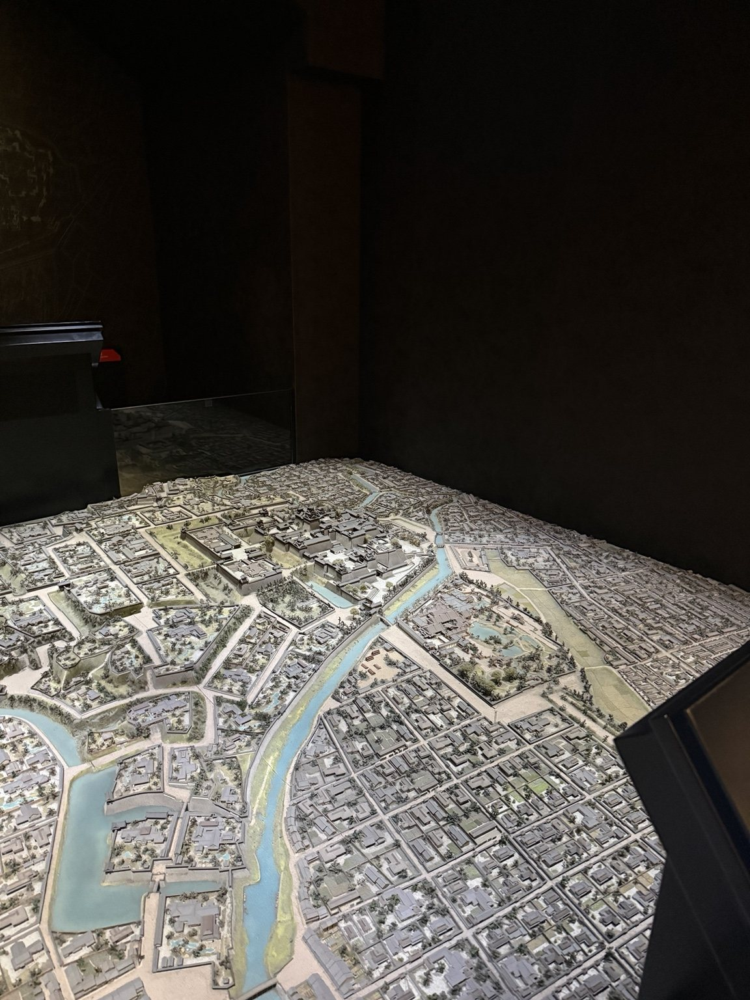
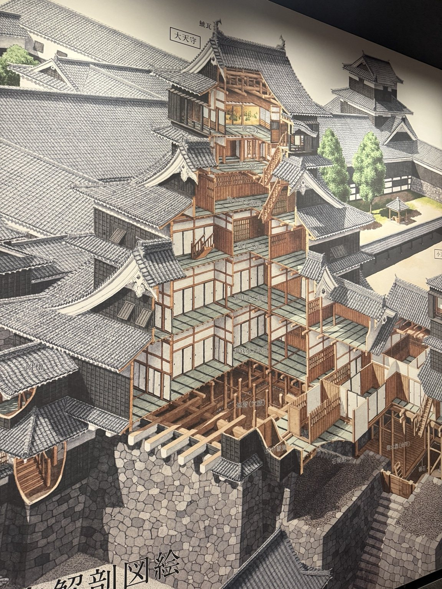
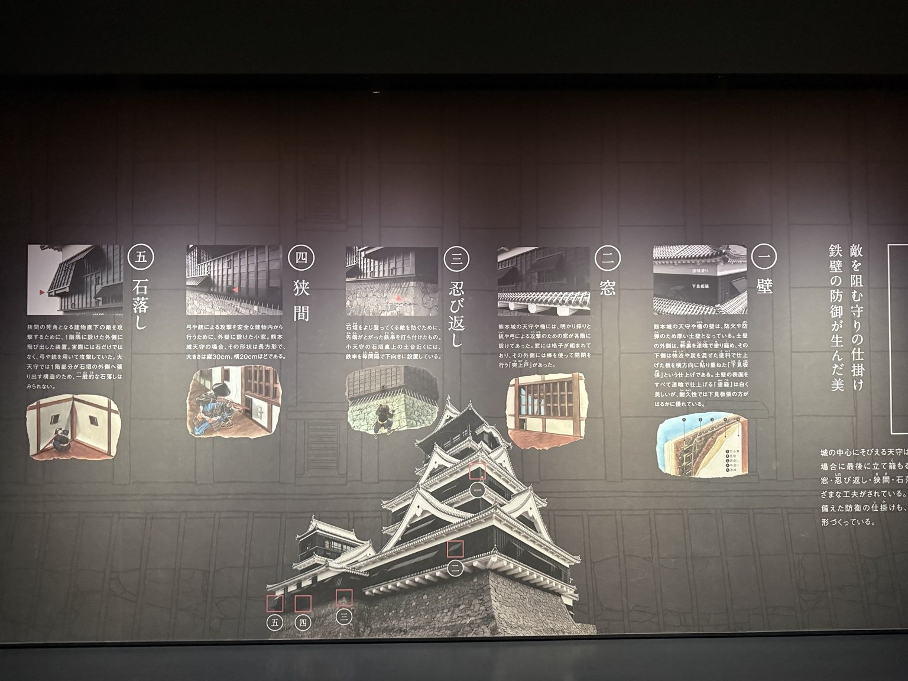
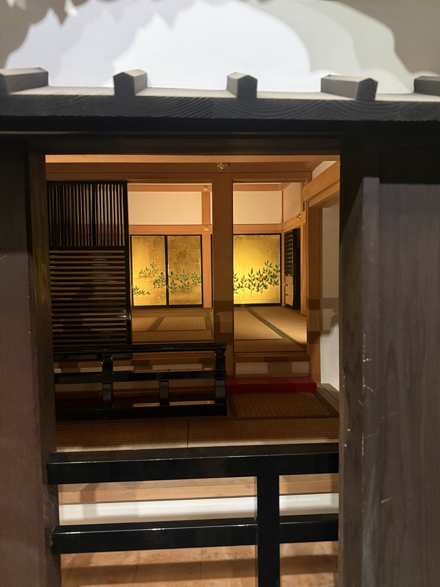
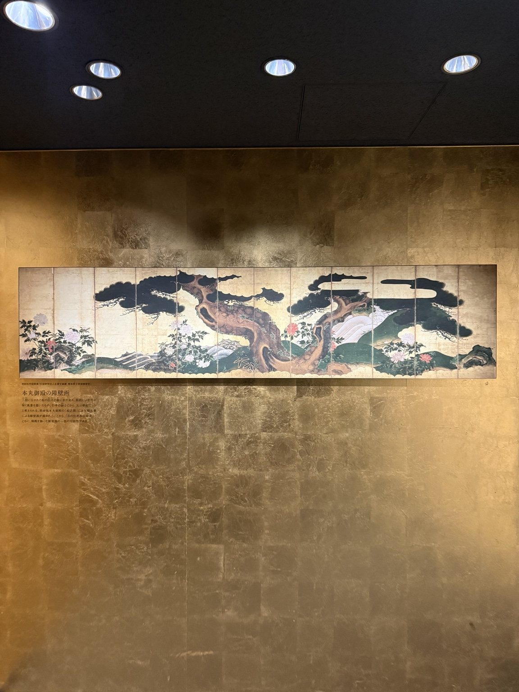

01
防禦
石垣、堀、門、櫓、狹間與動線共同形成多層次的防禦系統。
從天守、御殿與櫓，到城下町、權力與戰爭。用互動地圖與時間軸，理解日本城如何被建造、使用、摧毀與重建。

日本近世城郭的意義不只在天守。城主、家臣、士兵、工匠、商人與町人，以不同方式共同構成城與城下町。
石垣、堀、門、櫓、狹間與動線共同形成多層次的防禦系統。
御殿與城內行政空間支撐藩政、儀式、接待與家臣體系。
城下町將武家地、町人地、寺社、道路與水系組織成政治經濟中心。
城郭最醒目的高層建築之一。除了防禦與瞭望，也具有強烈的權力象徵性；但城主的日常政務與生活往往更多發生在御殿。
核心功能 象徵、瞭望、防禦、非常時的據點

展板資訊會被重新整理成網站自己的圖解與文字；實體模型、空間與文物照片則作為第一版視覺素材。



